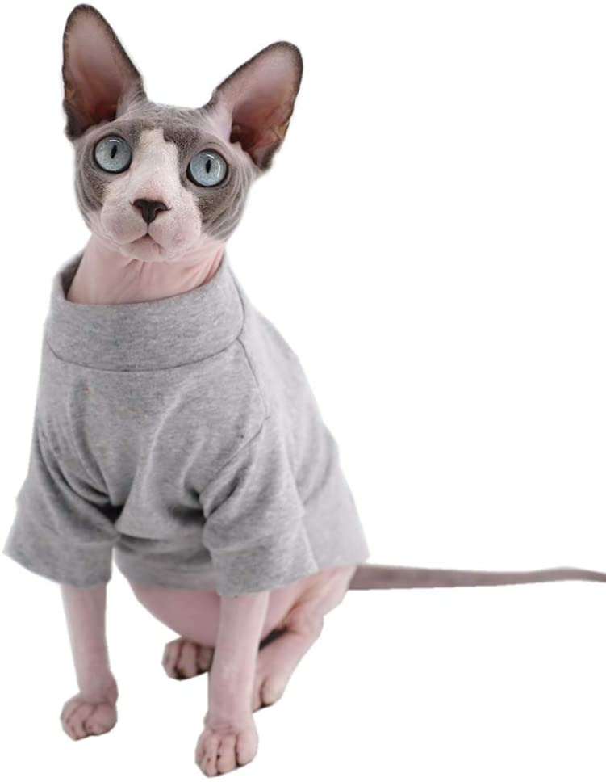

| Cat Breeds |
| Picture | Cat Name | Coloring | Attributes | Hair Type | Size |
| Russian Blue | grey | well behaved, gentle, and quiet | hypo-allergenic/short hair | 7-15 Pounds |
 | Bengal | tan with black and brown spots | loyal, sweet, and loving | soft and short | 8-15 Pounds |
| Maine Coon | variety | gentle natured and friendly | long/medium length | 13-18 Pounds |
|  | Sphynx | naked | extroverted, heat-seeking | hairless | 6-12 Pounds |
| Siamese | seal point, chocolate point, blue point, lilac point | friendly, affectionate, outgoing, and social | pointed | 8-14 Pounds |
 | Norwegian Forest Cat | variety | sweet, gentle, and a bit shy | long hair | 10-20 Pounds |
 | Persian | variety | quiet and sweet | long | 7-12 Pounds |
| Munchkin | variety | active and friendly | long, short, and hairless | 6-9 Pounds |